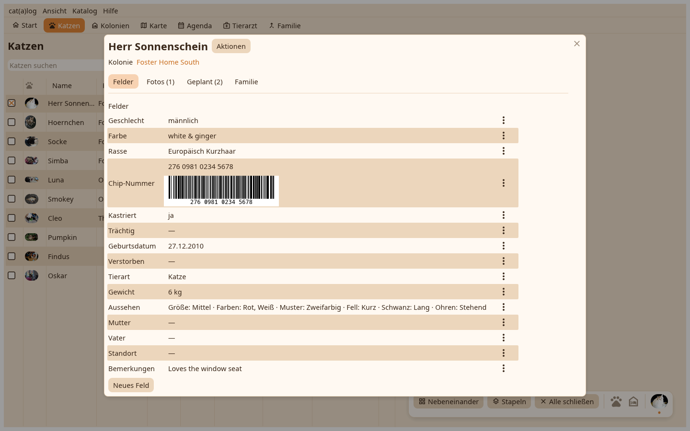

Bearbeiten öffnet die ganze Seite über dem Schreibtisch, in Reiter geschnitten: Felder, Fotos, Pläne und Familie für eine Katze; Felder, Katzen und Pläne für ein Zuhause. Der zuletzt benutzte Reiter kommt wieder.

Jedes Feld mit seinem Wert und dem Stift, der seinen Editor öffnet: Text mit so vielen Zeilen, wie du schreibst, ein Kalender für ein Datum, das sich weiter tippen lässt, eine Zahl oder ein Messwert in deinen Einheiten, eine Auswahl, ein Ort, auf der Karte gewählt oder über die Adresse gefunden, eine ID, ein Elternteil aus den Katzen, die eines sein könnten. Das Datum, ab dem er zählt, und die Privat-Markierung stehen getrennt vom Wert. Neues Feld legt eines für den Katalog an.
Fotos aus Dateien oder durch Ablegen, das Profilbild, zuschneiden und markieren, der Betrachter. Pläne: die Aufgaben und Termine dieser Katze mit ihren Editoren. Familie: Mutter, Vater, Wurfgeschwister und Kitten, wie sie sich aus den Feldern ergeben.
In ein anderes Zuhause verschieben, hier gesehen, Aushang hängt hier, auf der Karte zeigen, zusammenführen, die Karte, der Tierarztbericht, das Vermisst-Plakat, verstecken, löschen.